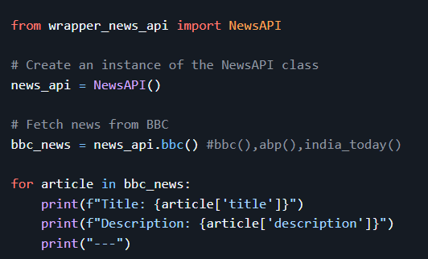
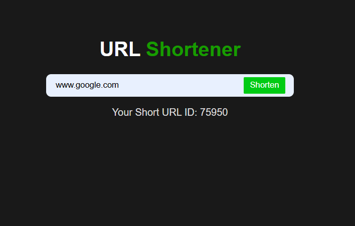
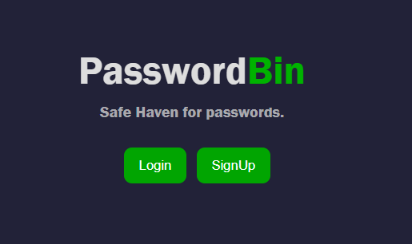

NewsAPI is a Python package that allows you to easily fetch the latest news articles from popular sources like BBC, ABP News, and India Today. Whether you're building a news aggregator or just looking for easy access to headlines, NewsAPI provides a simple interface to gather data with minimal setup.

A lightweight URL shortener built with Python Flask APIs and SQLite DB. It generates compact links, stores original URLs in a simple database, and quickly redirects users. Ideal for small projects needing efficient link management with minimal setup.

PasswordBin is a password manager built with React.js, Express.js, and MongoDB provides secure credential storage, encrypted data handling, and a smooth user interface. React manages the frontend, Express powers the backend API, and MongoDB stores passwords safely for reliable, efficient access.